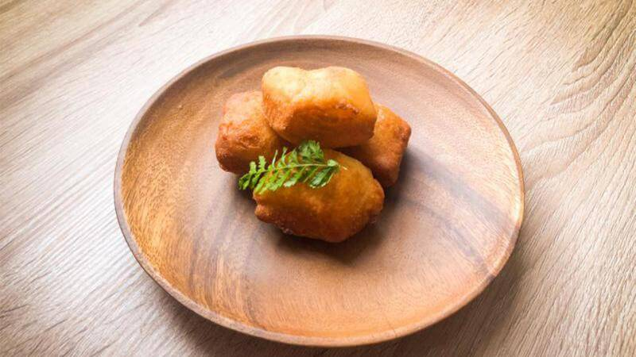

This Maori bread is indigenous to New Zealand. The Maori believe this bread form looks like rocks, and Paraora Parai supposedly translates directly into “fried stones.” and Paraora Parai supposedly translates directly into “fried stones.” This bread was traditionally made with fermented potatoes (rewena), but is now made with yeast or baking powder.
Ingredients:
2 cups
All Purpose Flour
4 tsp
Baking Powder
OR
3 tsp
Dry Yeast
Sufficient
Salt
Sufficient
Milk
Instructions:
Baking Powder Version:

- Sift flour, baking powder and salt together two times.
- Add enough milk to form sticky dough
- Knead for 5 minutes on floured surface
- Form dough into cylindrical shape
- Cut into even pieces
- Roll into oval shape
Dry Yeast Version:
Deep fry dough ovals at 180˚C for 10 minutes until bread is golden brown
Drain and serve while still hot.
Recipe found on: Hub-uk:New Zealand Recipes
Recipe found on: Hub-uk:New Zealand Recipes